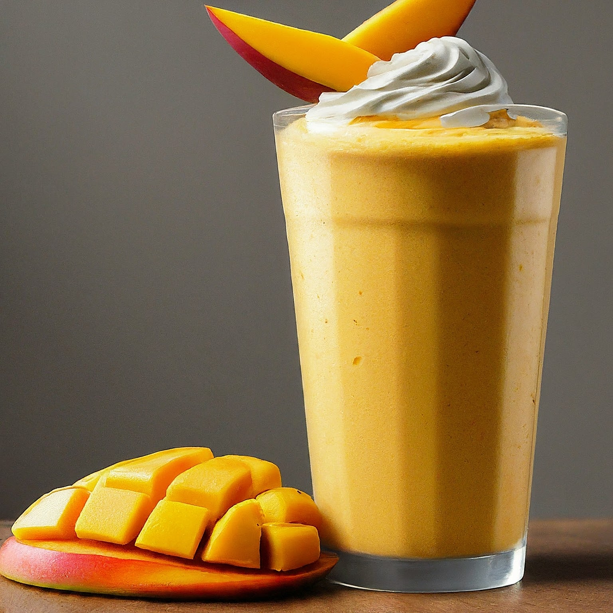

Mango Milkshake
Ingredients:
1 cup fresh or frozen mango chunks
1 cup chilled milk (whole milk, low-fat milk, or plant-based milk like almond milk or coconut milk)
1/2 - 1 tablespoon honey or sugar (to taste)
1/2 cup vanilla ice cream (optional, for a thicker and richer milkshake)
Pinch of ground cardamom (optional)
Ice cubes (optional)
Instructions:
Prepare Mango: If using fresh mangoes, peel, pit, and chop the mango flesh into chunks. Frozen mango chunks can be used directly without thawing.
Blend: In a blender, combine the mango chunks, chilled milk, honey or sugar, and any additional flavorings like cardamom. Blend until smooth and creamy.
Adjust Consistency: If you prefer a thicker milkshake, add the vanilla ice cream and blend again. If using frozen mango and the milkshake feels thick enough, you might not need ice cubes. However, you can add a few ice cubes for a colder beverage.
Taste and Adjust: Taste the milkshake and adjust the sweetness to your preference by adding more honey or sugar.
Serve and Enjoy: Pour the mango milkshake into chilled glasses and enjoy!
Tips:
Ripe Mangoes: For the best flavor, use ripe mangoes that are sweet and fragrant.
Milk Options: Choose the milk that suits your dietary needs and taste preference. Whole milk will create a richer milkshake, while low-fat or plant-based alternatives provide a lighter option.
Frozen Yogurt Option: Substitute vanilla ice cream with frozen yogurt for a slightly tart and healthier alternative.
Garnish Ideas: Top your milkshake with a dollop of whipped cream, a drizzle of honey, a sprinkle of chopped nuts, or a cherry for an extra touch.
Frozen Mango Tip: If using frozen mango and your blender struggles to achieve a smooth consistency, add a tablespoon or two of milk while blending.
This recipe offers a basic framework, so feel free to experiment with different flavors and ingredients to create your perfect mango milkshake!